Research
Human-Robot Collaborative Intelligence Framework for Flexible Manufacturing
An AI-driven manufacturing framework integrating Vision AI, Human Digital Twins, LLM-based interfaces, and collaborative robotics to enable safe, adaptive, and intuitive human-robot collaboration. The system combines real-time human behavior understanding, natural language interaction, ergonomic assessment, and robot learning to support flexible manufacturing tasks in dynamic industrial environments.
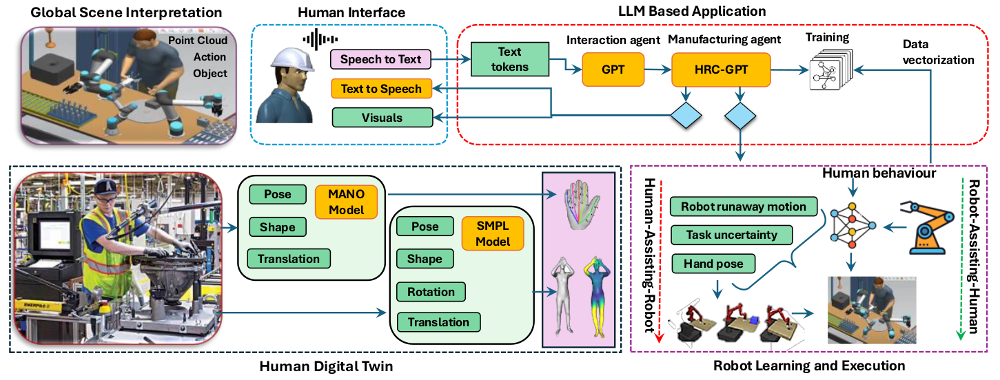
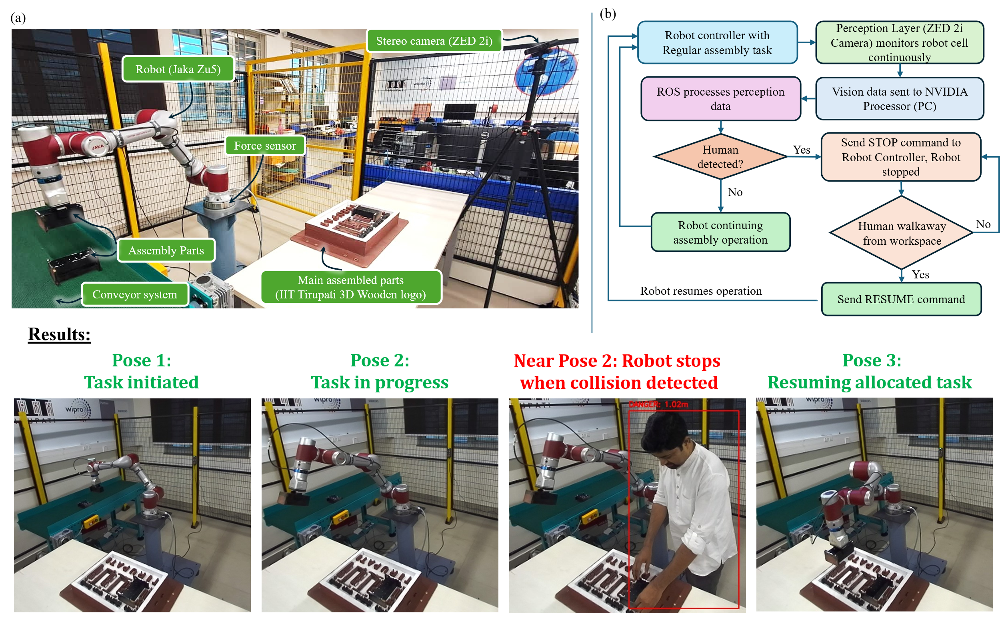
A ROS-enabled perception and safety framework for collaborative robot assembly. Real-time human detection using stereo vision allows automatic robot stop-and-resume functionality, ensuring safe human intervention without disrupting task execution.
Smart Wireless Accelerometer Along With Receiver Unit
Accelerometers are widely used to measure vibration and acceleration responses of structures subjected to dynamic loading conditions. They play a crucial role in modal testing, structural health monitoring, condition assessment, and vibration control applications across mechanical, aerospace, and civil engineering domains. Traditionally, wired accelerometers have been the preferred choice due to their measurement accuracy and reliability. However, deploying a large number of wired sensors for full-field modal analysis introduces several practical challenges. Extensive cabling increases system complexity, requires significant cable management efforts, and adds additional weight to the test structure. These factors can influence the dynamic characteristics of lightweight components, resulting in inaccurate measurements and reduced experimental fidelity. Furthermore, the installation and maintenance of numerous cables increase setup time, limit sensor mobility, and constrain scalability in large-scale monitoring applications. To overcome these limitations, there is a growing demand for miniature, lightweight, and wireless accelerometer systems that can provide accurate vibration measurements while reducing installation complexity, improving flexibility, and enabling efficient large-scale structural monitoring.
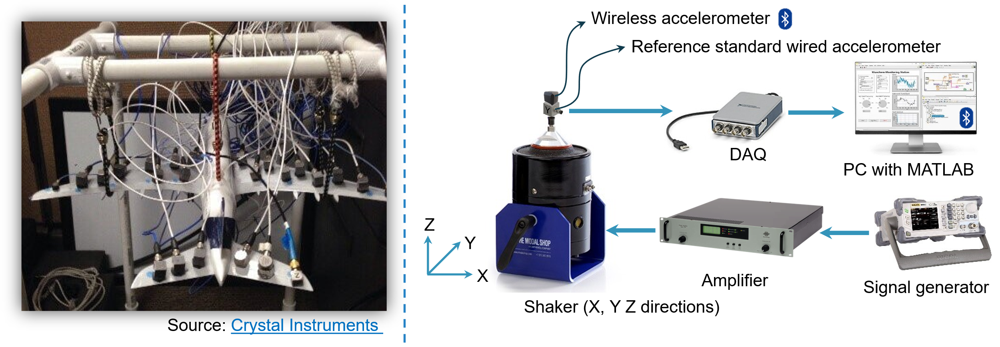
Real-Time Vision-Based Casting Defect Detection
In the foundry industries, quality inspection of a cast part plays a critical role in ensuring product reliability, process stability, and customer satisfaction. Traditionally, visual inspection has been performed by human operators due to its flexibility and ability to interpret complex surface variations. However, this approach is inherently subjective and susceptible to variability arising from factors such as operator skill level, fatigue, and environmental conditions. Visual inspections carried out during night shifts often exhibit reduced accuracy due to decreased alertness and inconsistent judgment, leading to higher defect escape rates and increased customer rejections. Moreover, the lack of standardized acceptance criteria further amplifies inconsistency in decision-making across different inspectors. These challenges not only affect product quality but also contribute to rework, scrap generation, and increased operational costs. Therefore, there is a growing need for reliable, consistent, and scalable inspection systems that can complement human expertise while minimizing variability in industrial quality control processes. While addressing this gap we propose real-time vision-based casting defect detection.
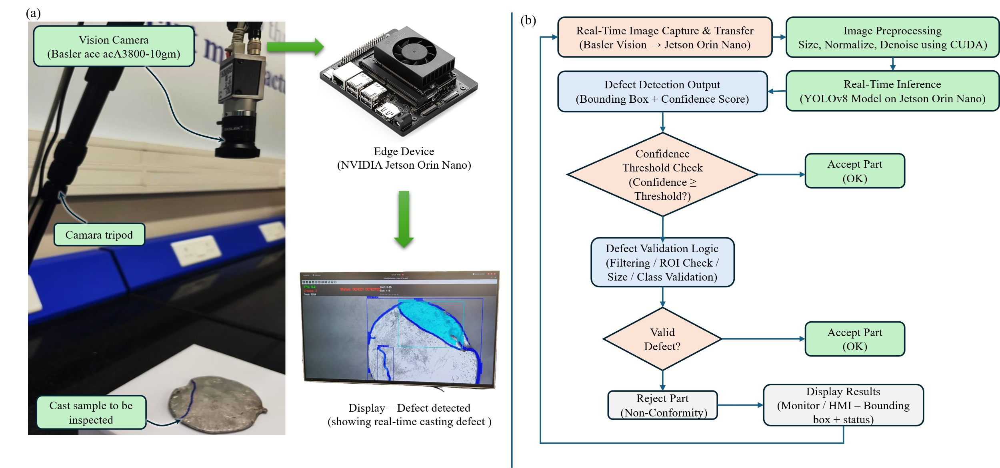
Hardware-in-the-Loop (HiL) Simulator for Machine Tool Vibration Control
The left schematic illustrates the signal and information flow within our hardware-in-the-loop (HiL) simulator. The HiL simulator aims to replicate machining vibrations, facilitating the development and testing of active damping strategies for their mitigation. On the right, an image showcases the LabVIEW-based application designed to control the HiL simulator and conduct various virtual cutting experiments. For further insights, explore our Publications. Access our code and design files here.
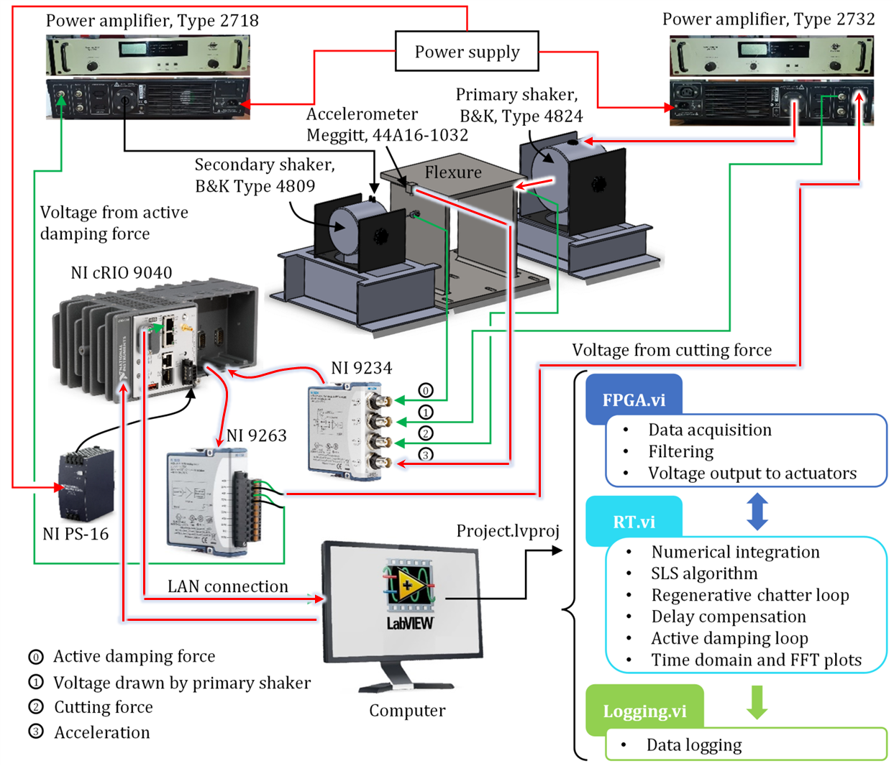
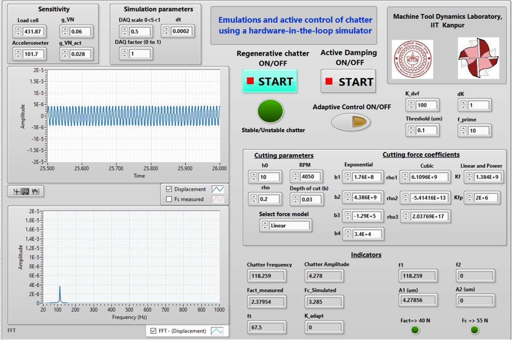
Adaptive Active Control Strategy for Real-Time Control of Machine Tool Vibrations with Cutting Process Nonlinearities
The left image depicts testing a model-free direct velocity feedback (DVF) based adaptive active control algorithm, aimed at mitigating instability caused by cutting force nonlinearities in the highly interrupted turning process using the HiL simulator. On the right, the image illustrates the implementation of this adaptive control technique on a milling machine, showcasing real-time vibration suppression through active damping.

Physics-Based Approach to Improve Productivity of Machine Tools
The top-left figure presents a stability map of the milling/turning processes, illustrating the relationship between depth of cut and spindle speed. This map is influenced by cutting tool dynamics, workpiece properties, and cutting conditions, guiding the selection of stable parameters for enhanced productivity without compromising machine tools. On the top-right, vibration data and surface finish outcomes demonstrate the impact of selected cutting parameters. The below figure showcases a physics-informed method used to update CAM Programs. This method integrates tool positioning errors, tool-workpiece dynamics, and material properties to create a digital twin of machining processes. This virtual representation of the cutting process dynamics allows for visualization and optimization of the cutting process before experimental implementation.
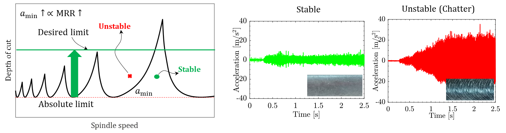
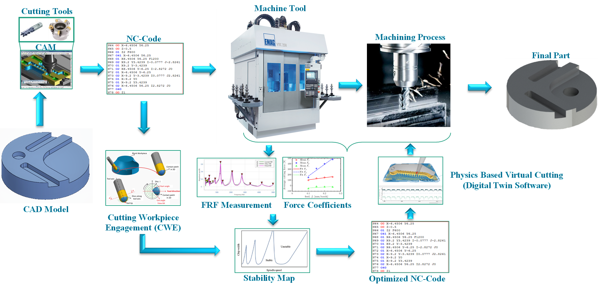
Static and Dynamic Characterization and Control of a High-Performance Electro-Hydraulic Actuator
The left figure showcases an electro-hydraulic actuator and its various components. This versatile actuator can apply static forces up to 7 kN and combined static and dynamic forces up to 1.5 kN. It is particularly valuable for dynamic testing applications in machine tools, aerospace, and automotive structures. The right figure illustrates the performance of closed-loop control applied to the actuator. It demonstrates its capability to work under increasing, decreasing, and random static loading inputs and across different frequencies under dynamic loading conditions.
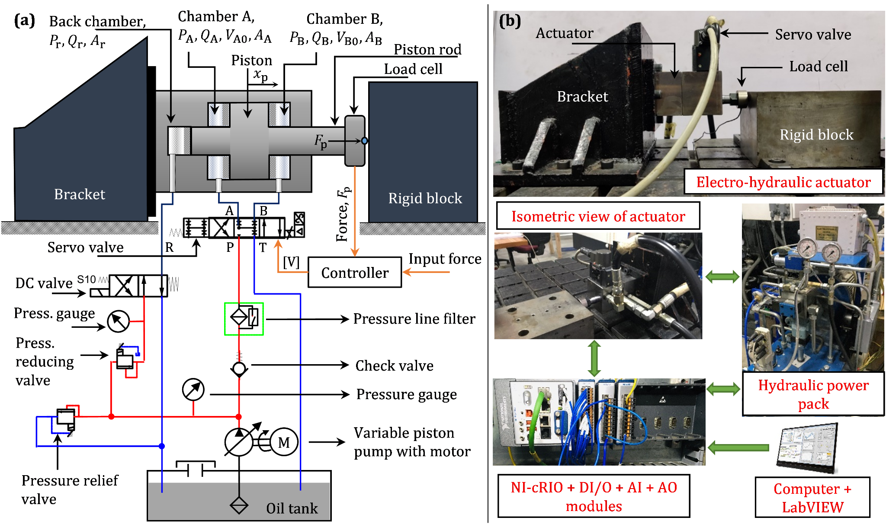
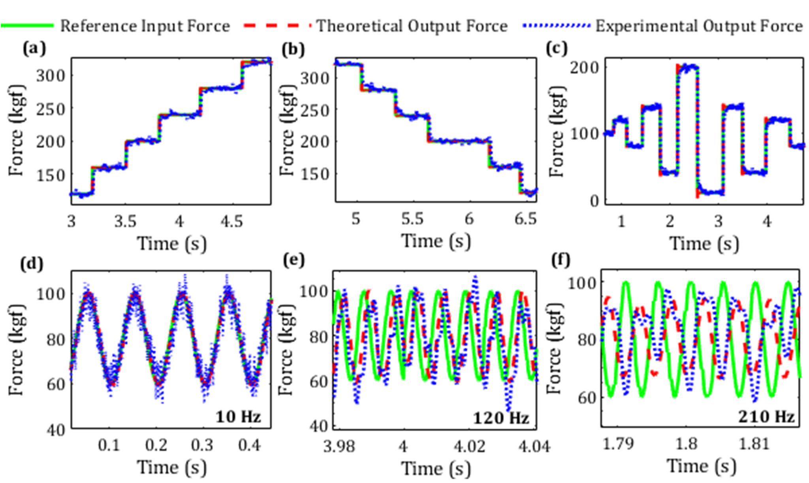
Active Control of Vibrations in Robotic Milling Machine
We present an active damping approach aimed at enhancing the low-frequency dynamic stiffness of a robotic milling machine. This method effectively suppresses low-frequency structural modes inherent to the robot.
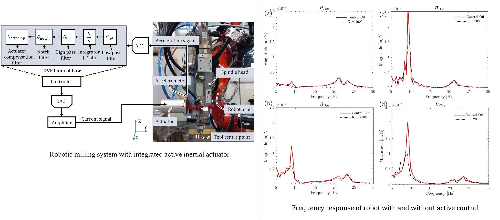
IoT Based Dashboard for Real-Time Data Visualization
We introduce an IoT-based dashboard designed to visualize sensor data in real-time. The sensor data is wirelessly transmitted to a cloud database and displayed instantaneously on the dashboard.